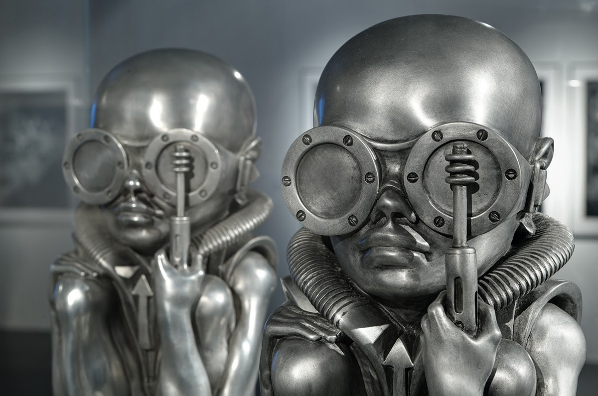

H. R. Giger
https://en.wikipedia.org/wiki/H._R._Giger


Click on images to enlarge
Hans Ruedi Giger (5 February 1940 – 12 May 2014) was a Swiss artist best known for his airbrushed images that blended human physiques with machines, an art style known as "biomechanical". Giger later abandoned airbrush for pastels, markers and ink. He was part of the special effects team that won an Academy Award for the visual design of Ridley Scott's 1979 sci-fi horror film Alien. His work is on permanent display at the H.R. Giger Museum in Gruyères, Switzerland. His style has been adapted to many forms of media, including album covers, furniture, and tattoos.
Early life
Giger was born in 1940 in Chur, the capital city of Graubünden, the largest and easternmost Swiss canton. His father, a pharmacist, viewed art as a "breadless profession" and strongly encouraged him to enter pharmacy. He moved to Zürich in 1962, where he studied architecture and industrial design at the School of Applied Arts until 1970.
Career
Giger's first success was when H. H. Kunz, co-owner of Switzerland's first poster publishing company, printed and distributed Giger's first posters, beginning in 1969. Giger's style and thematic execution were influential. He was part of the special effects team that won an Academy Award for Best Achievement in Visual Effects for their design work on the film Alien. His design for the Alien was inspired by his painting Necronom IV and earned him an Oscar in 1980. His books of paintings, particularly Necronomicon and Necronomicon II (1985) and the frequent appearance of his art in Omni magazine contributed to his rise to international prominence. Giger was admitted to the Science Fiction and Fantasy Hall of Fame in 2013. He is also well known for artwork on several music recording albums including Danzig III: How The Gods Kill by Danzig, Brain Salad Surgery by Emerson, Lake & Palmer, Attahk by Magma, Heartwork by Carcass, To Mega Therion by Celtic Frost, Eparistera Daimones and Melana Chasmata by Triptykon, Deborah Harry's KooKoo, and Frankenchrist, by the Dead Kennedys. In 1998, Giger acquired the Saint-Germain Castle in Gruyères, Switzerland, which now houses the H.R. Giger Museum, a permanent repository of his work.
Personal life
Giger had a relationship with Swiss actress Li Tobler until she died by suicide in 1975. Tobler's image appears in many of his paintings. He married Mia Bonzanigo in 1979; they divorced a year and a half later. Giger lived and worked in Zürich with his second wife, Carmen Maria Scheifele Giger, who is the director of the H.R. Giger Museum. On 12 May 2014, Giger died in a Zürich hospital after suffering injuries from a fall. In July 2018, the asteroid 109712 Giger was named in his memory.
Style
Giger started with small ink drawings before progressing to oil paintings. For most of his career, he worked predominantly in airbrush, creating monochromatic canvasses depicting surreal, nightmarish dreamscapes. He also worked with pastels, markers and ink. Giger's most distinctive stylistic innovation was that of a representation of human bodies and machines in cold, interconnected relationships, which he described as "biomechanical". His main influences were painters Dado,[15] Ernst Fuchs, and Salvador Dalí. He was introduced to Dali by painter Robert Venosa. Giger was also influenced by Polish sculptor Stanislaw Szukalski, and by painters Austin Osman Spare and Mati Klarwein, and was a personal friend of Timothy Leary. He studied interior and industrial design at the School of Commercial Art in Zurich from 1962–1965, and made his first paintings as art therapy.
Other works
Giger directed a number of films, including Swiss Made (1968), Tagtraum (1973), Giger's Necronomicon (1975) and Giger's Alien (1979). Giger created furniture designs, particularly the Harkonnen Capo Chair for a film of the novel Dune that was to be directed by Alejandro Jodorowsky. Many years later, David Lynch directed the film, using only rough concepts by Giger. Giger had wished to work with Lynch, as he stated in one of his books that Lynch's film Eraserhead was closer than even Giger's own films to realizing his vision. Giger also applied his biomechanical style to interior design. One "Giger Bar" appeared in Tokyo, but the realization of his designs was a great disappointment to him, since the Japanese organization behind the venture did not wait for his final designs, and instead used Giger's rough preliminary sketches. For that reason Giger disowned the Tokyo bar. The two Giger Bars in his native Switzerland, in Gruyères and Chur, were built under Giger's close supervision and they accurately reflect his original concepts. At The Limelight in Manhattan, Giger's artwork was licensed to decorate the VIP room, the uppermost chapel of the landmarked church, but it was never intended to be a permanent installation and bore no similarity to the bars in Switzerland. The arrangement was terminated after two years when the Limelight closed. Giger's art has greatly influenced tattooists and fetishists worldwide. Under a licensing deal Ibanez guitars released an H. R. Giger signature series: the Ibanez ICHRG2, an Ibanez Iceman, features "NY City VI", the Ibanez RGTHRG1 has "NY City XI" printed on it, the S Series SHRG1Z has a metal-coated engraving of "Biomechanical Matrix" on it, and a 4-string SRX bass, SRXHRG1, has "N.Y. City X" on it. Giger is often referred to in popular culture, especially in science fiction and cyberpunk. William Gibson (who wrote an early script for Alien 3) seems particularly fascinated: A minor character in Virtual Light, Lowell, is described as having New York XXIV tattooed across his back, and in Idoru a secondary character, Yamazaki, describes the buildings of nanotech Japan as Giger-esque.